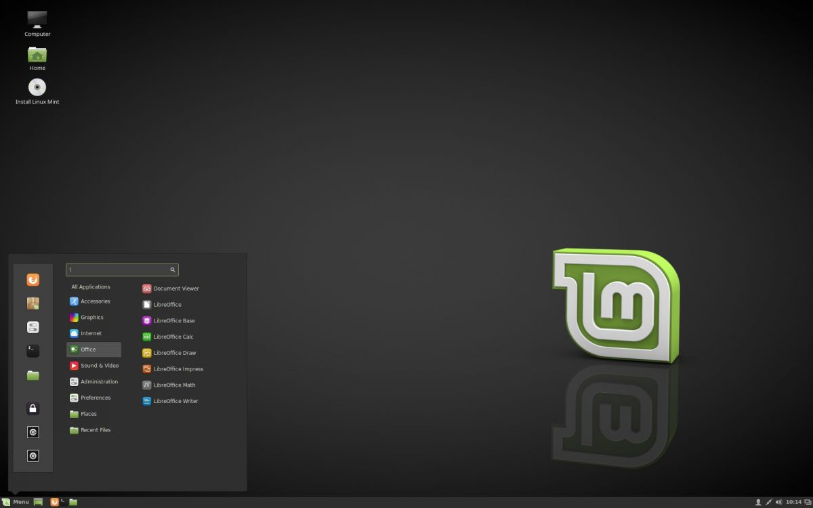

Linux Mint Ч развиваемый сообществом дистрибутив Linux, основанный на Ubuntu и Debian, который ставит целью предоставить пользователю Ђсовременную, элегантную и удобную операционную систему, котора€ одновременно €вл€етс€ мощной и простой в использованииї. Linux Mint предоставл€ет полную поддержку разнообразных форматов мультимедиа, включает в себ€ некоторые проприетарные программы и поставл€етс€ в комплекте с обширным набором приложений с открытым исходным кодом. ќснователь проекта Ч лемент Ћефевр, в развитии также активно участвуют команда разработчиков (Mint Linux Team) и сообщество пользователей.
ћинимальные системные требовани€ Linux Mint такие же, как и у Ubuntu:
x86 процессор (ƒл€ Linux Mint 64-bit требуетс€ 64-bit процессор.
Linux Mint 32-bit работает и на 32-bit, и на 64-bit процессорах);
RAM: 512 ћб (Cinnamon, XFCE, MATE), 2√б (KDE).
9 √б свободного места на жЄстком диске (HDD);
видеокарта: люба€, дл€ которой есть драйвер.
привод CD-ROM или порт USB.
